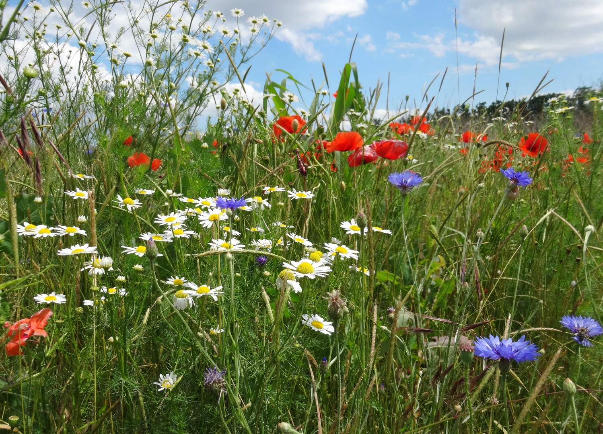

Будова квітки
Цвето́к (множ. цветки́, лат. flos, -oris, др.-греч. ἄνθος, -ου) — система органов семенного размножения цветковых (покрытосеменных) растений. Цветок представляет собой видоизменённый, укороченный и ограниченный в росте спороносный побег, приспособленный для образования спор и гамет, а также для проведения полового процесса, завершающегося образованием плода с семенами. Исключительная роль цветка как особой морфологической структуры связана с тем, что в нём полностью совмещены все процессы бесполого и полового размножения. От шишки голосеменных растений цветок отличается тем, что у него в результате опыления пыльца попадает на рыльце пестика, а не на семязачаток непосредственно, а при последующем половом процессе семязачатки у цветковых развиваются в семена внутри завязи. Цветок, будучи уникальным образованием по своей природе и функциям, поразительно разнообразен по деталям строения, окраске и размерам. Самые мелкие цветки растений семейства Рясковые имеют в диаметре всего около 1 мм, в то же время как самый крупный цветок у раффлезии Арнольда (Rafflesia arnoldii) семейства Раффлезиевые, обитающей в тропических лесах на острове Суматра, достигает в диаметре 91 см и имеет массу около 11 кг. Цветки бывают одиночными, но чаще группируются в соцветия.
Цветок состоит из стеблевой части (цветоножка и цветоложе), листовой части (чашелистики, лепестки) и генеративной части (тычинки, пестик или пестики). Цветок занимает апикальное положение, но при этом он может располагаться как на верхушке главного побега, так и бокового. Он прикрепляется к стеблю посредством цветоножки. Если цветоножка сильно укорочена или отсутствует, цветок называется сидячим (подорожник, вербена, клевер). На цветоножке располагаются также два (у двудольных) и один (у однодольных) маленьких предлиста — прицветника, которые часто могут отсутствовать. Верхняя расширенная часть цветоножки называется цветоложем, на котором располагаются все органы цветка. Цветоложе может иметь различные размеры и форму — плоскую (пион), выпуклую (земляника, малина), вогнутую (миндаль), удлинённую (магнолия). У некоторых растений в результате срастания цветоложа, нижних частей покрова и андроцея образуется особая структура — гипантий. Форма гипантия может быть разнообразной и иногда участвовать в образовании плода (цинарродий — плод шиповника, яблоко). Гипантий характерен для представителей семейств розовых, крыжовниковых, камнеломковых, бобовых
Одна из характерных черт строения цветка — его симметрия. По особенностям симметрии цветки делятся на актиноморфные, или правильные, через которые можно провести несколько плоскостей симметрии, каждая из которых делит его на две равные части (зонтичные, капустные), — и зигоморфные, или неправильные, через которые можно провести только одну вертикальную плоскость симметрии (бобовые, злаковые). Если через цветок нельзя провести ни одной плоскости симметрии, его называют несимметричным, или асимметричным (валериана лекарственная, канновые). По аналогии с актиноморфностью, зигоморфностью и асимметричностью цветка в целом говорят и об актиноморфности, зигоморфности и асимметричности венчика. Для краткого и условного обозначения строения цветков применяют формулы, в которых при помощи буквенных и цифровых обозначений кодируют различные морфологические признаки: пол и симметрию цветка, число кругов в цветке, а также число членов в каждом круге, срастание частей цветка и положение пестиков (верхняя или нижняя завязь). Диаграмма цветка. 1 — ось соцветия, 2 — прицветник, 3 — чашелистик, 4 — лепесток, 5 — тычинка, 6 — гинецей, 7 — кроющий лист Наиболее полное представление о строении цветка дают диаграммы, которые представляют схематическую проекцию цветка на плоскость, перпендикулярную оси цветка и проходящую через кроющий лист и ось соцветия или побега, на котором расположен цветок.